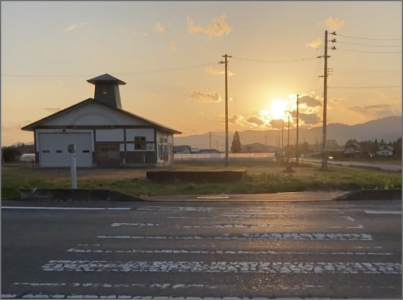

コースを走る前に必読！注意事項
サイクリングの目印に注目
紫波町でのサイクリングは、看板や信号機、道路表示板、お店（スーパーやコンビニエンスストア）などが目印です。
自転車乗車中は気づかず通り過ぎてしまいがちなので、時々止まってガイドの通りに目印を見つけましょう。
現地の路面状況について
歩道が片側のみ、または歩道がない道路区域が所々にあります。
マップをよく確認し、現地では慎重に走りやすい道を判断して走りましょう。
極端に狭い道もあります。無理に通らず、自転車から降りて押しながら歩きましょう。
紫波町の中心部では、南北に流れる北上川から東西に向かうゆるやかな傾斜面があります。
急な上り坂は少ないですが、登りがきついと感じたら、自転車を押して、のどかな景色を楽しみながら歩行してください。※歩行時、歩道がない場所では走行車に十分注意してください。
また、紫波中央駅付近へ戻る際は下り坂での加速にご注意を。
中心部から遠い場所では、街灯が少ない区域があります。夕暮れの走行はライトを点け、暗さに注意してください。（歩行者や走行車などの接触に注意！）

熊の出没スポットに注意！
紫波町の自然エリアでは、熊の出没がしばしば確認されます。近頃は、行動範囲の拡大により、中心部でも森林近くや人里で熊と遭遇する頻度が高くなっているようです。
サイクリングコースでも、自然に近い区域を通るので、熊との遭遇の可能性を念頭に置き、以下のガイドに従って安全に走行してください。
熊トラブルガイド
熊の出没条件
- 活発時間は早朝、夕方、霧の時
- 笹やぶ、森林、川沿い、山すそに出没傾向あり
出没範囲での行動の仕方
- 音で自分の存在を知らせながら進む（ラジオ、鈴、笛など）
- 道端に飲み物、食べ物を捨てないこと（熊が食べ物を求め、人里に降りる習慣が付いてしまうため）
もし熊に遭遇したら
- 子熊を見たら速やかにその場を去る（特に危険な親熊が駆けつけてきます
- 距離が離れている時：静かに去る
距離が近い時：急に動かず、様子を見ながらゆっくり後退する
- 熊に背中を見せたり、その場に立ち止まり続けたり、大声や大音で驚かさないこと（敵と見做されます）
▲熊が出没しやすい陣ヶ丘公園
当サイトのサイクリングマップページでは、出没危険予想区域に（熊危険アイコン）のマークを記載しています。
走行時の警戒にお役立てください。
熊遭遇時の対応に不安がある方は、無理に立ち寄らず、外側からの景観をお楽しみください。
自転車の準備方法 2パターン
①レンタサイクルを利用する
紫波町では、複合施設「オガール(OGAL)」より有料貸し出し自転車を提供しています。
町外からお越しで、自転車の持参が難しい！という方はぜひこちらをご利用して
みてください。普段乗らないタイプの自転車に出会えるかも？
複合施設「オガール（OGAL）」
貸出内容
- 貸出時間
10:00〜17:00
- 料 金
-
Ⓐ
ロードバイク
4時間：1,700円
1日：2,200円
Ⓑ
クロスバイク＆
電動シティサイクル
4時間：1,200円
1日：1,700円
詳しく見る
- オプション
-
●利用時間延長（１時間ごとに＋500円）
●リタイアお迎えサービス（１組あたり）
・「オガール」から10km以内
2,000円
・「オガール」から10km〜100km
5,000円
- 利用方法
-
①
「紫波町情報交流館」（開館日10:00〜21:00）
※休館日：月曜日（祝日の場合はその翌日）月末最終平日
へ、電話で予約する
②
レンタサイクル利用当日に「紫波町情報交流館」内の「総合受付」にて書類手続きを済ませる
③
利用料金支払い後、自転車レンタル開始（オガール出発）

※その他、留意事項など詳しい情報は、
公式サイトを参照してください。
②自分の自転車で乗る
町内在住の方、もしくは町外から持参の自転車でサイクリングを楽しむ方は、こちらの２通りの手順で始めることができます。
手順１：自家用車で持ち運ぶ
車に積載できる大きさであれば、紫波中央駅付近まで自動車で移動して、サイクリングを始めることができます。
駐車場は近くの「紫波中央駅前駐車場」が便利です。
（利用料金：〜90分 無料/90分〜4時間 100円/4時間以降、12時間ごとに100円加算）
手順２：公共交通機関を利用して持ち込む（輪行）
折りたたみ自転車や、解体できる身軽な自転車（ロードバイクなど）であれば、新幹線や鉄道、バスなどの交通機関に持ち込み移動が可能です。大きな荷物なので、周りの乗客へ迷惑がかからないように端への位置取りを心がけましょう。
- 列車
- 専用の輪行袋に収納（はみ出さないように）し、規定サイズ・重量以内であれば「手回り品」として無料で持ち込み可能。
※地方によって両輪を外す必要がある場合もあり
- 新幹線
- 列車と同条件であれば「手回り品」として無料で持ち込み可能。置き場所は最後部のスペースを確保できると安心です。
※最後部座席は地域によって要予約
- バス
-
- 路線バス
- 輪行袋に入るコンパクトな折りたたみ自転車であれば、混雑時以外で手回り品として持ち込み可能です。
- 高速バス
- ほとんど持ち込み不可能である場合が多い様子ですが、一部で取り扱い可能となっている運行会社もあります。
※有料であったり、トランクへの積み込みを自身で行うなどそれぞれ規定が異なるので、乗るバスへのご確認が必須です。
サイクリング当日の服装・持ち物
服装について
サイクリングには当然、動きやすい格好で行くことをおすすめします。
特にボトムスには、ジーンズなどの硬い素材やスカートのような広がる形のものを選ぶと走行時の怪我につながるので避けましょう。
持ち物について
１時間以上の外出になるので、水分補給用の飲み物は必携。小腹が空いた時のおやつもあると安心です。
また、お店の物販や施設の入場料の支払いができるようにお金も用意しておきましょう。
遠方からお越しで荷物が多い方は、最低限の荷物以外は紫波中央駅のコインロッカー（6：00〜22：00/100円リターン式）に入れ、身軽で快適なサイクリングをお楽しみいただくことがます。